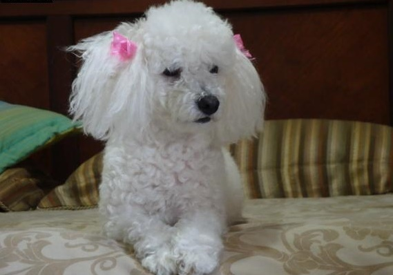
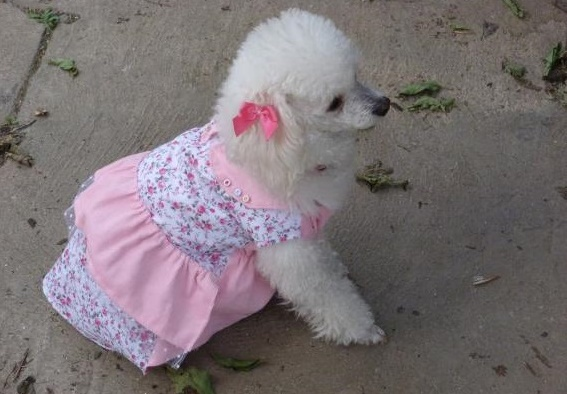
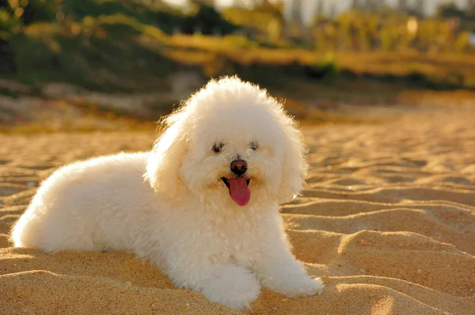

La vida de Mia
Mia Valentina es una perrita de color blanco que vive en la vibrante urbanización Prados del Sur, en Venezuela. Desde que llegó a la vida de su dueño, Emanuel Josué Núñez Medina, ha sido una fuente inagotable de alegría y aventuras. Con su pelaje suave y su mirada brillante, Mia Valentina no solo es hermosa, sino que también tiene grandes sueños. Desde pequeña, Mia Valentina ha tenido aspiraciones poco comunes para una perrita. Su mayor deseo es convertirse en millonaria, y no solo por el lujo, sino para poder ayudar a otros animales y hacer del mundo un lugar mejor. Además, sueña con ser astronauta. A menudo se la puede ver mirando al cielo estrellado, imaginando cómo sería flotar entre las estrellas y explorar nuevos planetas. ¡Quién sabe! Tal vez un día logre cumplir su sueño y se convierta en la primera perrita astronauta.
En cuanto a su dieta, Mia Valentina es muy selectiva. Su comida favorita es la carne y el pollo, y no hay nada que le haga más feliz que disfrutar de un delicioso platillo preparado por Emanuel. Cada vez que huele el aroma de su comida favorita, su cola se mueve con entusiasmo, y no puede esperar para saborear cada bocado.
Mia Valentina es una perrita llena de energía y carisma. Le encanta jugar en el parque, correr tras las mariposas y hacer nuevos amigos. Su personalidad alegre y su espíritu soñador la convierten en una compañera única y especial. Con el apoyo incondicional de Emanuel, Mia Valentina sigue persiguiendo sus sueños, recordándonos a todos que no importa cuán grandes sean nuestras aspiraciones, siempre hay espacio para la diversión y el amor en el camino.